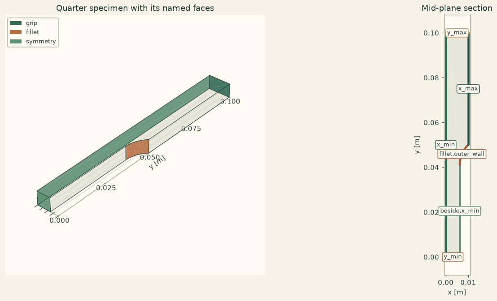

Docs › Examples › Fatigue life with rainflow cycle counting
Fatigue · 2D
Fatigue life with rainflow cycle counting
A notched specimen under a variable-amplitude load block: count the cycles, apply an S-N curve with mean-stress effect, and find where and when it fails.
Run locally with OneSimulation. The example downloads are free. Running them requires an activated runtime. OneSimulation 1.0 · CPython 3.13 on macOS (Apple Silicon), Ubuntu 22.04 (x86-64), and Windows x64. Installation and activation · View pilot plans. Scope of the reference checks.

What it computes
OneSimulation solves the plane-stress specimen with quadratic triangles graded at the fillet, scales the unit-load stress field by the load history, counts cycles with the ASTM E1049 rainflow algorithm and accumulates Miner damage at every node. The geometry is read from a STEP file with named faces; the script that builds it comes with the notebook.
What it checks
The rainflow table reproduces the ASTM example exactly, the binned damage matches the benchmark (0.1824 vs 0.182), and the notebook shows that the true cycles give five times more damage than the bins and that the fillet, not the benchmark point, is critical.
Geometry
The notebook starts at the import of the CAD file fatigue_cycle_counting_component.step: STEP (AP242), readable by any CAD program, with the names of the faces that the boundary conditions use. Put it next to the notebook.


The geometry script
The script fatigue_cycle_counting_component_geometry.py builds the geometry with the CAD objects of OneSimulation and writes the file. Change a dimension there, run it, and run the notebook again.
"""Geometry of the OneSimulation example "Cycle counting and fatigue damage in a flat specimen".
Builds one quarter of the flat tensile specimen (thickness 6.25 mm) with the CAD objects of
OneSimulation and writes fatigue_cycle_counting_component.step: a 10 mm x 100 mm strip, cut back
to the 6.25 mm half-width of the central section and rounded by the fillet of radius 12.5 mm.
The face groups are symmetry_x, symmetry_y, grip, fillet and free (central-section edge, fillet
and grip edge).
"""
from math import sqrt
from onesim.cad.d3 import Box, Cylinder
half_width, half_neck, half_length, fillet_radius, thickness = (
0.010,
0.00625,
0.100,
0.0125,
0.00625,
)
neck_end = 0.050 - sqrt(
fillet_radius**2 - (fillet_radius - (half_width - half_neck)) ** 2
)
quarter = Box(length=half_width, width=half_length, height=thickness)
quarter = quarter - Box(
length=half_width - half_neck,
width=neck_end,
height=thickness,
origin=(half_neck, 0.0, 0.0),
).named("beside")
quarter = quarter - Cylinder(
radius=fillet_radius,
length=thickness,
origin=(half_neck + fillet_radius, neck_end, 0.0),
).named("fillet")
faces = quarter.boundaries
round_face = quarter.select(faces=lambda face: face.kind == "cylinder")
straight_edge = quarter.select(
faces=lambda face: face.kind == "plane"
and abs(face.normal[0]) > 0.5
and face.center[0] > 0.0
)
quarter = quarter.grouped(
symmetry_x=faces.x_min,
symmetry_y=faces.y_min,
grip=faces.y_max,
fillet=round_face,
free=round_face | straight_edge,
)
quarter.save("fatigue_cycle_counting_component.step")The notebook
The complete notebook, cell by cell. Run it to produce the figures and the comparison printout.
A load spectrum that is not a single sinusoid has to be broken into closed stress cycles before an S-N curve can be applied. The standard way is rainflow counting (ASTM E1049-85, Standard Practices for Cycle Counting in Fatigue Analysis, Sec. 5.4.4). Each counted cycle \(i\) (full or half) has an amplitude \(\sigma_{a,i}\), a mean \(\sigma_{m,i}\) and a load ratio \(R_i=\sigma_{\min}/\sigma_{\max}\); the Palmgren-Miner rule then accumulates
where \(n_i\in\{\tfrac12,1\}\), \(m\) is the number of repetitions of the load block and \(N\) the life from the S-N curve. Failure is predicted at \(D=1\).
Setup. The specimen is a flat bar of thickness 6.25 mm: a central section 12.5 mm wide, circular fillets of radius 12.5 mm and 20 mm wide grips; overall length 200 mm. Aluminium, \(E=69\) GPa, \(\nu=0.34\). One unit of the load history is the axial force \(F_u=781.25\) N that produces 10 MPa in the central section. The load block is the ASTM E1049 example sequence \(-2,1,-3,5,-1,3,-4,4,-2\) units, repeated \(m=10^5\) times. The S-N curve depends on the stress amplitude and on \(R\),
and lives \(N\ge 10^8\) count as infinite.
The CAD file fatigue_cycle_counting_component.step holds one quarter of the specimen with the face groups symmetry_x, symmetry_y, grip, fillet and free; the script fatigue_cycle_counting_component_geometry.py builds it with the CAD objects of OneSimulation. The specimen is thin and loaded in its plane, so the model is plane stress on its mid-plane.
| boundary | condition |
|---|---|
| \(x=0\) and \(y=0\) (symmetry lines) | no normal displacement |
| grip end \(y=100\) mm | uniform traction, \(F_u/2\) on the quarter per load unit |
| central-section edge, fillet, grip edge | traction free |
Reference. The rainflow table of the ASTM E1049 worked example, the nominal stress and the reaction force, and the bin-based fatigue usage of this benchmark, \(D=0.182\) (finite elements) and \(D=0.184\) (hand evaluation of the ASTM cycles on the same bins).
import numpy as np
from onesim.cad.exchange import load
from onesim.meshing import TriangularMesher
from onesim.physics.solid_mechanics import SmallStrainSolid, fatigue_cycles
from onesim.results.comparisons import convergence
from onesim.results.derived import signed_extreme_principal
from onesim.visualization import plots, theme
theme.set()Geometry
load returns the quarter specimen with its named faces; section cuts it at half thickness and returns the planar region, whose sides carry the names of the faces they were cut from.
specimen = load("fatigue_cycle_counting_component.step")
faces = specimen.boundaries
half_width, half_length, thickness = specimen.size
quarter = specimen.section((0, 0, 1), origin=(0, 0, thickness / 2))
sides = quarter.boundaries
free = sides.x_max | sides["beside.x_min"] | sides["fillet.outer_wall"]
fig = plots.figure(1, 2, size=(13, 6))
plots.geometry(
specimen,
selection={
"grip": faces.grip,
"fillet": faces.fillet,
"symmetry": faces.symmetry_x | faces.symmetry_y,
},
labels=False,
camera=plots.Camera(elevation=35, azimuth=-50),
title="Quarter specimen with its named faces",
ax=fig[0],
)
plots.geometry(quarter, title="Mid-plane section", ax=fig[1])
plots.show()Stress per load unit
Quadratic triangles, 0.2 mm along the fillet and the central-section edge and 1.6 mm elsewhere; every refinement level splits each triangle into four. The material is linear, so one solve with a unit load gives the stress per load unit. Linear triangles on the same meshes serve as a comparison. The principal stress of largest magnitude is taken at the integration points.
youngs_modulus, half_neck = 69e9, 0.00625
unit_force = 10e6 * 2 * half_neck * thickness
solid = SmallStrainSolid(
youngs_modulus=youngs_modulus,
poisson_ratio=0.34,
kinematics="plane_stress",
thickness=thickness,
)
def solve(order, level):
"""Mesh, unit-load solution and principal stress on the mesh refined `level` times."""
mesh = TriangularMesher(
target_size=1.6e-3,
grading=0.2,
refinements=level,
local_sizes={"beside.x_min": 0.2e-3, "fillet.outer_wall": 0.2e-3},
).generate(quarter)
result = solid.solve(
mesh=mesh,
times=(1.0,),
order=order,
displacements=((sides.x_min, "x", 0.0), (sides.y_min, "y", 0.0)),
tractions=(
(sides.y_max, (0.0, unit_force / 2 / (half_width * thickness))),
(free, (0.0, 0.0)),
),
)
return mesh, result, signed_extreme_principal(result.stress[0])
runs = {(order, level): solve(order, level) for order in (1, 2) for level in (0, 1, 2)}
mesh, result, principal = runs[2, 2]
peaks = {key: run[2].max() for key, run in runs.items()}
elongation = {
key: run[1]
.displacement[0][np.isclose(run[1].coordinates[:, 1], half_length), 1]
.mean()
for key, run in runs.items()
}
benchmark_point = np.argmin(
np.hypot(*(result.quadrature_coordinates - (0.003, 0.020)).T)
)
sigma_bench, sigma_hot = result.stress[0][benchmark_point, 1, 1], peaks[2, 2]
reaction = -result.reactions[0][np.isclose(result.coordinates[:, 1], 0.0), 1].sum()
print(
f"benchmark point (3, 20) mm: {sigma_bench / 1e6:.5f} MPa per unit, nominal 10 MPa"
)
print(f"reaction on y = 0: {reaction:.4f} N, applied {unit_force / 2:.4f} N")
print(f"stress concentration of the fillet: {sigma_hot / 10e6:.4f}")
print("elements triangles elongation [nm] fillet peak [MPa]")
for (order, level), (cells, _, _) in runs.items():
print(
f"P{order} {cells.cell_count:15d} {1e9 * elongation[order, level]:17.5f} {peaks[order, level] / 1e6:19.5f}"
)
study = convergence([elongation[2, level] for level in (0, 1, 2)], [4.0, 2.0, 1.0])
print(
f"P2 elongation: observed order {study.order:.2f}, extrapolated {1e9 * study.extrapolated:.5f} nm; "
f"P2 fillet peak changes by {100 * abs(peaks[2, 2] / peaks[2, 1] - 1):.4f} % on the last refinement"
)Rainflow counting and damage
fatigue_cycles reduces the load block to its turning points and counts the cycles after ASTM E1049 (full cycles as they close, half cycles from the residue). The load is proportional, so every point sees the same cycles, scaled by its stress per load unit.
load_block, blocks, infinite_life = (
(-2.0, 1.0, -3.0, 5.0, -1.0, 3.0, -4.0, 4.0, -2.0),
1e5,
1e8,
)
amplitude, mean, count = np.array(
[
(c.stress_amplitude, c.mean_stress, c.count)
for c in fatigue_cycles(stress=load_block)
]
).T
sn_life = lambda amplitude, ratio: (amplitude / (94e6 * (ratio / -0.36) ** 1.15)) ** (
-1 / 0.119
)
def damage(amplitude, mean):
"""Miner damage of each counted cycle after all blocks, for its stress amplitude and mean in Pa."""
with np.errstate(all="ignore"):
life = sn_life(amplitude, (mean - amplitude) / (mean + amplitude))
return blocks * np.where(life < infinite_life, count / life, 0.0)
true_cycles = damage(sigma_bench * amplitude, sigma_bench * mean)
amplitude_bins, mean_bins = np.linspace(15e6, 45e6, 8), np.linspace(-10e6, 10e6, 6)
centre = (
lambda edges, values: edges[
np.clip(
np.searchsorted(edges, values + 1.0, side="right") - 1, 0, len(edges) - 2
)
]
+ np.diff(edges)[0] / 2
)
binned = damage(
centre(amplitude_bins, sigma_bench * amplitude),
centre(mean_bins, sigma_bench * mean),
)
damage_hot = damage(sigma_hot * amplitude, sigma_hot * mean).sum()
damage_map = damage(
np.abs(principal)[:, None] * amplitude, principal[:, None] * mean
).sum(axis=1)
print("range [units] cycles counted ASTM E1049")
for load_range, astm in ((3, 0.5), (4, 1.5), (6, 0.5), (8, 1.0), (9, 0.5)):
print(
f"{load_range:13d} {count[np.isclose(2 * amplitude, load_range)].sum():16.1f} {astm:12.1f}"
)
print(
f"benchmark point after {blocks:.0e} blocks: D = {binned.sum():.4f} on the bin centres (benchmark 0.182, hand evaluation 0.184), "
f"D = {true_cycles.sum():.4f} with the true cycles"
)
print(
f"fillet: D = {damage_hot:.3f}, predicted life {blocks / damage_hot:.0f} blocks (benchmark point {blocks / true_cycles.sum():.0f} blocks)"
)Figure
The principal stress per load unit and the damage on the cells of the finest mesh, the stress history of one block, the damage of each counted cycle at the benchmark point (labelled by amplitude/mean in MPa) and the mesh study of the fillet stress.
per_cell = lambda values: values.reshape(mesh.cell_count, -1).max(axis=1)
steps = np.arange(1, len(load_block) + 1)
unknowns = {
order: [2 * runs[order, level][1].space.dof_count for level in (0, 1, 2)]
for order in (1, 2)
}
fig = plots.figure(
layout=[
["stress", "damage", "history", "matrix"],
["stress", "damage", "bars", "study"],
],
size=(21, 10),
)
plots.mesh(
mesh,
cell_values=per_cell(principal) / 1e6,
edges=False,
limits=(6.0, sigma_hot / 1e6),
label="MPa per load unit",
title="Principal stress",
ax=fig["stress"],
)
plots.mesh(
mesh,
cell_values=np.log10(np.maximum(per_cell(damage_map), 1e-6)),
edges=False,
limits=(-2.0, np.log10(damage_hot)),
label="log10 D",
title=f"Miner damage, max {damage_hot:.2f}",
ax=fig["damage"],
)
plots.line(
steps,
{
"fillet hot spot": np.array(load_block) * sigma_hot / 1e6,
"benchmark point": np.array(load_block) * sigma_bench / 1e6,
},
markers=True,
hlines=0.0,
xlabel="load step in block",
ylabel="stress [MPa]",
title="Stress history of one block",
ax=fig["history"],
)
plots.line(
points={
"counted cycles": (sigma_bench * mean / 1e6, sigma_bench * amplitude / 1e6)
},
vlines=mean_bins / 1e6,
hlines=amplitude_bins / 1e6,
xlabel="mean stress [MPa]",
ylabel="stress amplitude [MPa]",
title="Rainflow matrix and benchmark bins",
ax=fig["matrix"],
)
plots.bars(
[
f"{a:.0f}/{m:.0f}"
for a, m in zip(sigma_bench * amplitude / 1e6, sigma_bench * mean / 1e6)
],
{
f"true cycles, D = {true_cycles.sum():.3f}": true_cycles,
f"bin centres, D = {binned.sum():.3f} (benchmark 0.182)": binned,
},
ylabel="damage contribution",
title="Damage per cycle at the benchmark point",
ax=fig["bars"],
)
plots.line(
points={
f"P{order} triangles": (
unknowns[order],
[peaks[order, level] / 1e6 for level in (0, 1, 2)],
)
for order in (1, 2)
},
scale="logx",
xlabel="unknowns",
ylabel="fillet peak stress [MPa per unit]",
title="Mesh study of the critical stress",
ax=fig["study"],
)
plots.show()Going further
Change the fillet radius in fatigue_cycle_counting_component_geometry.py, write the STEP file again and find the radius at which the fillet stops being the critical location. Replace the R-dependent curve by a fully reversed S-N curve with a Goodman or Gerber mean-stress correction (SNDataset(mean_stress_correction="goodman", ...) with linear_damage_field) and compare the predicted lives.